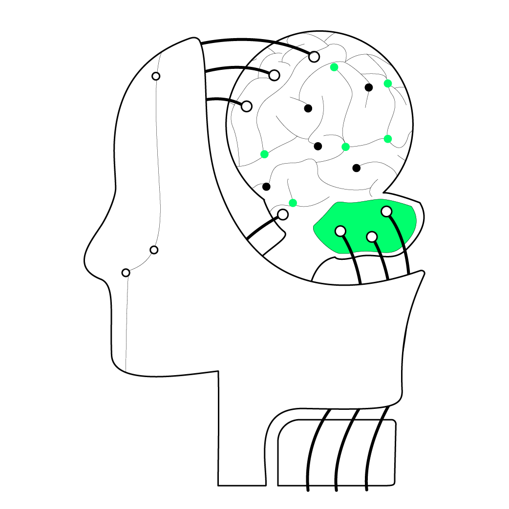

起源和概念
实证主义（Positivism）是一种以“实际验证”为中心的哲学思想。广义而言，任何种类的哲学体系，只要求知于经验材料的思辨，都为实证主义。 这一思想最早可以追朔到英国13世纪的经验主义学者罗杰·培根。 法国哲学家奥古斯特·孔德首先用实证一词来传达事物的六项性质：真实的、有用的、确定的、正确的、有机的和相对的。实证主义的基本特征是：将哲学的任务归结为现象研究，以现象论观点为出发点，拒绝通过理性把握感觉材料，认为通过对现象的归纳就可以得到科学定律。它把处理哲学与科学的关系作为其理论的中心问题，并力图将哲学溶解于科学之中。Read more...
教育学界对实证主义范式意义的争论
赞同派基本上是执著于教育学科学化的“科学派”。激进的赞同派认为，实证研究(主义)范式是教育学的主流范式，应该把实证研究(主义)范式的意义上升到关系中国教育学的命运乃至中国教育改革命运的高度。温和的赞同派在视实证研究(主义)范式为主流范式的同时，也不反对其他范式的存在。
反对派多数是对教育学科学化持反对或怀疑态度的“人文派”。激进的反对派倡导人文主义范式，反对在教育学研究中使用实证研究(主义)范式。如有学者认为，实证主义范式“忽视了教育中的情感、终极关怀、人性等重要内容，导致教育研究与生活世界产生了根本的割裂和对立”，提出教育研究要“建立立足于生活世界的研究范式”。温和的反对派，并不否定实证研究(主义)范式的作用，只是不赞同它成为教育学的主流范式。如有学者认为，“从求真的角度来说，教育学的科学化求助于实证研究无可厚非”，但“教育理论的共识性、教育现象的情境性、教育问题的复杂性和教育实践的规范性等特点，决定了实证研究不能广泛运用于教育研究中。Read more...